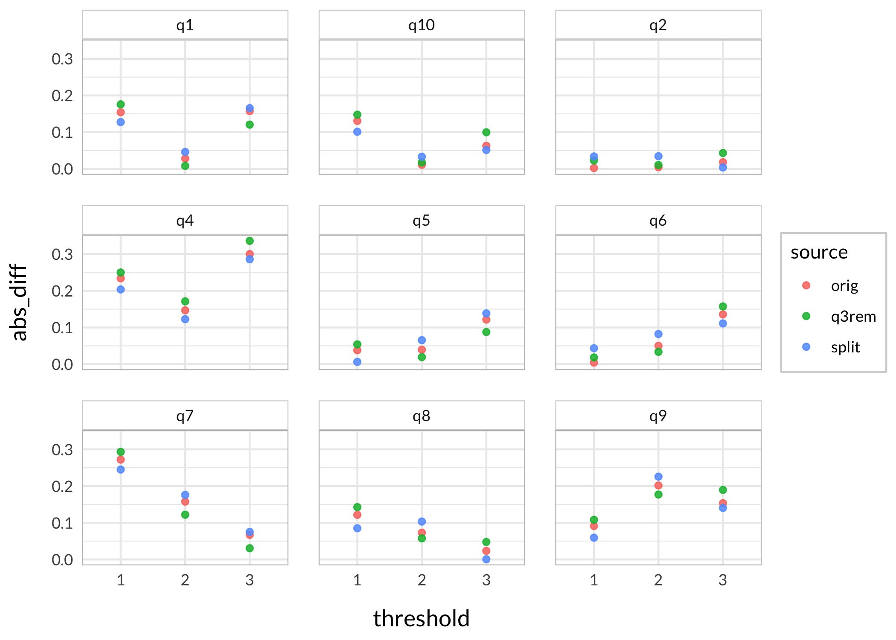

Out of interest of better understanding som aspects of differential item functioning (DIF, a form of invariance test):
how much does DIF affect estimated thetas (factor scores)?
how to do item-split in R (creating separate items for subgroups from one item with problematic DIF)
how an item-split compares to removing the item (and keeping the DIF item) in terms of absolute differences in estimated thetas
We’ll use simulated data in order to have knowledge of the thetas used to generate response data (“input thetas” in the text below), and make objective comparisons using the different estimated thetas.
# item list for simulation for group 1tlist1<-list( q1 =list(1.2, 1.8, 2.4), q2 =list(-1.3, -0.5, 0.5), q3 =list(-0.3, 0.3, 1.2), q4 =list(0.1, 0.6, 1.6), q5 =list(-0.3, 0.7, 1.5), q6 =list(-1.6, -1, -0.3), q7 =list(1, 1.8, 2.5), q8 =list(-1.3, -0.7, 0.4), q9 =list(-0.8, 1.4, 1.9), q10 =list(0.25, 1.25, 2.15))# make a tibble/dataframe also, for possible later useinputParams1<-tibble( q1 =c(1.2, 1.8, 2.4), q2 =c(-1.3, -0.5, 0.5), q4 =c(0.1, 0.6, 1.6), q5 =c(-0.3, 0.7, 1.5), q6 =c(-1.6, -1, -0.3), q7 =c(1, 1.8, 2.5), q8 =c(-1.3, -0.7, 0.4), q9 =c(-0.8, 1.4, 1.9), q10 =c(0.25, 1.25, 2.15), q3a =c(-0.3, 0.3, 1.2), q3b =c(-0.3+1, 0.3+1, 1.2+1))%>%t()%>%as.matrix()# center to 0inputParams1c<-inputParams1-mean(inputParams1)# item list for simulation for group 2tlist2<-list( q1 =list(1.2, 1.8, 2.4), q2 =list(-1.3, -0.5, 0.5), q3 =list(-0.3+1, 0.3+1, 1.2+1), q4 =list(0.1, 0.6, 1.6), q5 =list(-0.3, 0.7, 1.5), q6 =list(-1.6, -1, -0.3), q7 =list(1, 1.8, 2.5), q8 =list(-1.3, -0.7, 0.4), q9 =list(-0.8, 1.4, 1.9), q10 =list(0.25, 1.25, 2.15))
Then generate random thetas that we save to file to be able to reproduce the analysis.
Code
# simulate thetasthetas1<-rnorm(300, mean =0, sd =1.5)thetas2<-rnorm(300, mean =0, sd =1.5)input_thetas<-c(thetas1,thetas2)# simulate response data based on the above defined item thresholdstd1<-SimPartialScore( deltaslist =tlist1, thetavec =thetas1)%>%as.data.frame()td2<-SimPartialScore( deltaslist =tlist2, thetavec =thetas2)%>%as.data.frame()d<-rbind(td1,td2)%>%add_column(group =rep(1:2, each =300))dif.group<-factor(d$group)d$group<-NULLall_data<-list(simResponses =d, dif_group =dif.group, input_thetas =input_thetas)# save simulated data for reproducibility#saveRDS(all_data,"dif_magnitude_1_0.Rdata")
We now have 10 items with 4 categories each, 600 respondents with half of respondents having differential item functioning for one item (item q3), with 1 logit uniform difference in location (all thresholds for item q3 are + 1 logits).
Values highlighted in red are above the chosen cutoff 0.5 logits. Background color brown and blue indicate the lowest and highest values among the DIF groups.
thetas_separate<-RIestThetas(d2)hist(thetas_separate$WLE, breaks =30, col ="lightblue")hist(thetas_together$WLE, breaks =30, col ="lightpink")hist(thetas_q3_removed$WLE, breaks =30, , col ="sienna4")summary(thetas_separate$WLE)summary(thetas_together$WLE)summary(thetas_q3_removed$WLE)
Min. 1st Qu. Median Mean 3rd Qu. Max.
-4.3612 -1.6587 -0.7658 -0.8223 0.2691 2.2954
Min. 1st Qu. Median Mean 3rd Qu. Max.
-4.2351 -1.5175 -0.5810 -0.5954 0.5084 4.1459
Min. 1st Qu. Median Mean 3rd Qu. Max.
-4.1900 -1.4352 -0.6010 -0.5733 0.5012 4.1074
The upper range is rather different for the item split subgroup when using this method. Let’s review the threshold locations.
Maybe we can see some pattern here. Item split results in misestimation of items q6 and q8, which have low locations. On the other hand, item 2 has a lower location than 4, yet the item split data results in less bias for item 2.
Then again, as with this whole experiment, all of this should be run through hundreds of simulated datasets to see the patterns correctly.
The method for estimating item parameters and thetas used in the function RIestThetas() may be at fault? We can separate the two steps, and use a separate function for theta estimation with manual input of item parameters.
Looks like the two step approach worked a lot better. Since the item parameter estimation is identical (both are using eRm::PCM()), the reason should be the difference in theta estimation. The two-step approach uses catR::thetaEst(), which probably is handling missing data in a more adequate way than iarm::person_estimates(). Both approaches use the Weighted Likelihood Estimation to minimize bias.
3 Results
3.1 Summarised
First, absolute differences in estimated thetas compared to input thetas.
Code
c_diff<-c%>%mutate(with_q3 =abs(together_RIestThetas-input_thetas), q3_removed =abs(together_q3_rem-input_thetas), q3_split =abs(separate_catR-input_thetas))%>%select(!names(c))c_diff%>%pivot_longer(everything())%>%ggplot(aes(x =value))+geom_histogram(bins =50)+facet_wrap(~name, ncol =1)+labs(x ="Absolute difference in logits", title ="Comparing input thetas to estimated", subtitle ="Distribution of bias")

No clear pattern differentiating these histograms, from my ocular inspection of the plot at least.
We should look at the particular region where the DIF item is located, since it should have the most impact there.
3.2 Across the latent continuum
First, the test information function (TIF) curve could be of interest to understand what to expect in terms of estimation bias due to reliability limitations.
Item split seems to increase bias in the lower range, from -4 to +1.
Keeping q3 and removing q3 are almost identical below 0.5, while removing q3 results in lower bias from 0.5 til 4 logits.
3.2.3lordif package
Also, the lordif package has a function to produce relevant output.
Code
library(lordif)g_dif<-lordif(as.data.frame(d), as.numeric(dif.group), # make sure that the data is in a dataframe-object and that the DIF variable is numeric criterion =c("Chisqr"), alpha =0.01, beta.change =0.1, model ="GPCM", R2.change =0.02)g_dif_sum<-summary(g_dif)
---title: "Rasch DIF magnitude, item split, and theta difference"subtitle: "Brief exploration of Differential Item Functioning in R"author: name: Magnus Johansson affiliation: RISE Research Institutes of Sweden affiliation-url: https://www.ri.se/en/shic orcid: 0000-0003-1669-592Xdate: last-modifiedcitation: type: 'webpage'csl: apa.cslexecute: cache: true warning: false message: falseeditor: markdown: wrap: 72editor_options: chunk_output_type: console---## BackgroundOut of interest of better understanding som aspects of differential item functioning (DIF, a form of invariance test):- how much does DIF affect estimated thetas (factor scores)?- how to do item-split in R (creating separate items for subgroups from one item with problematic DIF)- how an item-split compares to removing the item (and keeping the DIF item) in terms of absolute differences in estimated thetasWe'll use simulated data in order to have knowledge of the thetas used to generate response data ("input thetas" in the text below), and make objective comparisons using the different estimated thetas.```{r}#| code-fold: truelibrary(tidyverse)library(eRm)library(iarm)library(RISEkbmRasch)library(summarytools)library(ghibli)### some commands exist in multiple packages, here we define preferred ones that are frequently usedselect <- dplyr::selectcount <- dplyr::countrecode <- car::recoderename <- dplyr::renametheme_rise <-function(fontfamily ="Lato", axissize =13, titlesize =15,margins =12, axisface ="plain", panelDist =0.6, ...) {theme_minimal() +theme(text =element_text(family = fontfamily),axis.title.x =element_text(margin =margin(t = margins),size = axissize ),axis.title.y =element_text(margin =margin(r = margins),size = axissize ),plot.title =element_text(face ="bold",size = titlesize ),axis.title =element_text(face = axisface ),plot.caption =element_text(face ="italic" ),legend.text =element_text(family = fontfamily),legend.background =element_rect(color ="lightgrey"),strip.background =element_rect(color ="lightgrey"),panel.spacing =unit(panelDist, "cm", data =NULL),panel.border =element_rect(color ="grey", fill =NA), ... )}theme_set(theme_rise())```### Simulate response dataFirst define input parameters for items.```{r}# item list for simulation for group 1tlist1 <-list(q1 =list(1.2, 1.8, 2.4),q2 =list(-1.3, -0.5, 0.5),q3 =list(-0.3, 0.3, 1.2),q4 =list(0.1, 0.6, 1.6),q5 =list(-0.3, 0.7, 1.5),q6 =list(-1.6, -1, -0.3),q7 =list(1, 1.8, 2.5),q8 =list(-1.3, -0.7, 0.4),q9 =list(-0.8, 1.4, 1.9),q10 =list(0.25, 1.25, 2.15))# make a tibble/dataframe also, for possible later useinputParams1 <-tibble(q1 =c(1.2, 1.8, 2.4),q2 =c(-1.3, -0.5, 0.5),q4 =c(0.1, 0.6, 1.6),q5 =c(-0.3, 0.7, 1.5),q6 =c(-1.6, -1, -0.3),q7 =c(1, 1.8, 2.5),q8 =c(-1.3, -0.7, 0.4),q9 =c(-0.8, 1.4, 1.9),q10 =c(0.25, 1.25, 2.15),q3a =c(-0.3, 0.3, 1.2),q3b =c(-0.3+1, 0.3+1, 1.2+1)) %>%t() %>%as.matrix()# center to 0inputParams1c <- inputParams1 -mean(inputParams1)# item list for simulation for group 2tlist2 <-list(q1 =list(1.2, 1.8, 2.4),q2 =list(-1.3, -0.5, 0.5),q3 =list(-0.3+1, 0.3+1, 1.2+1),q4 =list(0.1, 0.6, 1.6),q5 =list(-0.3, 0.7, 1.5),q6 =list(-1.6, -1, -0.3),q7 =list(1, 1.8, 2.5),q8 =list(-1.3, -0.7, 0.4),q9 =list(-0.8, 1.4, 1.9),q10 =list(0.25, 1.25, 2.15))```Then generate random thetas that we save to file to be able to reproduce the analysis.```{r}#| eval: false# simulate thetasthetas1 <-rnorm(300, mean =0, sd =1.5)thetas2 <-rnorm(300, mean =0, sd =1.5)input_thetas <-c(thetas1,thetas2)# simulate response data based on the above defined item thresholdstd1 <-SimPartialScore(deltaslist = tlist1,thetavec = thetas1) %>%as.data.frame()td2 <-SimPartialScore(deltaslist = tlist2,thetavec = thetas2) %>%as.data.frame()d <-rbind(td1,td2) %>%add_column(group =rep(1:2, each =300))dif.group <-factor(d$group)d$group <-NULLall_data <-list(simResponses = d,dif_group = dif.group,input_thetas = input_thetas)# save simulated data for reproducibility#saveRDS(all_data,"dif_magnitude_1_0.Rdata")``````{r}all_data <-readRDS("dif_magnitude_1_0.Rdata")d <- all_data$simResponsesdif.group <- all_data$dif_groupinput_thetas <- all_data$input_thetas```We now have 10 items with 4 categories each, 600 respondents with half of respondents having differential item functioning for one item (item q3), with 1 logit uniform difference in location (all thresholds for item q3 are + 1 logits).## DIF assessmentLet's test for DIF with some different methods.### LR-test```{r}RIdifTableLR(d, dif.group)RIdifThreshFigLR(d, dif.group)```### Partial gamma```{r}RIpartgamDIF(d, dif.group)```### Psychotree```{r}RIdifTable(d, dif.group)```DIF clearly shown.### Item splitNow, we'll do an item split and compare thetas for both groups with and without split, and also with the DIF item removed.``` {r}thetas_together <- RIestThetas(d)thetas_q3_removed <- RIestThetas(d %>% select(!q3))d2 <- d %>% add_column(group = dif.group) %>% mutate(q3a = if_else(group == 1, q3, NA), q3b = if_else(group == 2, q3, NA) ) %>% select(!group) %>% select(!q3)```Let's look at the data and a targeting plot.``` {r}RItileplot(d2)RImissing(d2)RItargeting(d2)```Comparing to non-split data.```{r}RItargeting(d)itemlabels <-data.frame(itemnr =names(d), item ="")RIitemHierarchy(d)```### Estimating thetas```{r}#| layout-ncol: 2thetas_separate <-RIestThetas(d2)hist(thetas_separate$WLE, breaks =30, col ="lightblue")hist(thetas_together$WLE, breaks =30, col ="lightpink")hist(thetas_q3_removed$WLE, breaks =30, , col ="sienna4")summary(thetas_separate$WLE)summary(thetas_together$WLE)summary(thetas_q3_removed$WLE)```The upper range is rather different for the item split subgroup when using this method. Let's review the threshold locations.### Comparing item parameters::: panel-tabset#### Original data```{r}RIitemparams(d)```#### Item split```{r}RIitemparams(d2)```#### DIF item removed```{r}RIitemparams(d %>%select(!q3))```#### Threshold differences```{r}dp <-RIitemparams(d, output ="dataframe") %>%select(!Location) %>%set_names(paste0("orig_",1:3)) %>%rownames_to_column("item") %>%filter(!str_detect(item,"q3"))dp2 <-RIitemparams(d2, output ="dataframe") %>%select(!Location) %>%set_names(paste0("split_",1:3)) %>%rownames_to_column("item") %>%filter(!str_detect(item,"q3"))dp3 <-RIitemparams(d %>%select(!q3), output ="dataframe") %>%select(!Location) %>%set_names(paste0("q3rem_",1:3)) %>%rownames_to_column("item") %>%filter(!str_detect(item,"q3"))d_params <-cbind(dp,dp2[,-1],dp3[,-1]) # bind columns, keeping one "item" columndpin <- inputParams1c %>%as.data.frame() %>%set_names(paste0("input_",1:3)) %>%rownames_to_column("item") %>%filter(!str_detect(item,"q3"))dpin_long <- dpin %>%pivot_longer(!item,names_sep ="_",names_to =c("source","threshold"),values_to ="input")```#### Plot estimation bias```{r}d_params %>%pivot_longer(!item, names_sep ="_",names_to =c("source","threshold")) %>%left_join(dpin_long[,-2], by =c("item","threshold")) %>%group_by(source,item,threshold) %>%summarise(abs_diff =abs(input - value)) %>%ggplot(aes(x = threshold, y = abs_diff, color = source)) +geom_point(alpha =0.85) +facet_wrap(~ item)```#### Summary plot estimation bias```{r}itemlocs <-RIitemparams(d %>%select(!q3), output ="dataframe") %>%pull(Location)item_order <-sort(as.numeric(itemlocs))d_params %>%pivot_longer(!item, names_sep ="_",names_to =c("source","threshold")) %>%left_join(dpin_long[,-2], by =c("item","threshold")) %>%group_by(source,item,threshold) %>%summarise(abs_diff =abs(input - value)) %>%ungroup() %>%group_by(source,item) %>%summarise(sum_diff =sum(abs_diff)) %>%ungroup() %>%pivot_wider(values_from ="sum_diff",names_from ="source",id_cols ="item") %>%pivot_longer(!item) %>%mutate(item =factor(item, levels =names(itemlocs), labels =paste0(names(itemlocs),"_",as.numeric(itemlocs)))) %>%ggplot(aes(x = item, y = value, color = name) ) +geom_point(size =3) +labs(title ="Total estimation bias for each item and item set")```#### :::Maybe we can see some pattern here. Item split results in misestimation of items q6 and q8, which have low locations. On the other hand, item 2 has a lower location than 4, yet the item split data results in less bias for item 2.Then again, as with this whole experiment, all of this should be run through hundreds of simulated datasets to see the patterns correctly.The method for estimating item parameters and thetas used in the function `RIestThetas()` may be at fault? We can separate the two steps, and use a separate function for theta estimation with manual input of item parameters.```{r}itemps <-RIitemparams(d2, output ="dataframe") %>%select(!Location) %>%as.matrix()thetas_separate_catR <-RIestThetasOLD(d2, itemParams = itemps, theta_range =c(-8,8))c <-tibble(together_RIestThetas = thetas_together$WLE,together_q3_rem = thetas_q3_removed$WLE,separate_catR = thetas_separate_catR,separate_RIestThetas = thetas_separate$WLE,input_thetas = input_thetas)c %>%pivot_longer(everything(),names_to ="method",values_to ="theta") %>%ggplot(aes(x = theta)) +geom_histogram(bins =50) +facet_wrap(~method, axes ="all_x") +scale_x_continuous(breaks =seq(-5,5,1))```Looks like the two step approach worked a lot better. Since the item parameter estimation is identical (both are using `eRm::PCM()`), the reason should be the difference in theta estimation. The two-step approach uses `catR::thetaEst()`, which probably is handling missing data in a more adequate way than `iarm::person_estimates()`. Both approaches use the Weighted Likelihood Estimation to minimize bias.## Results ### SummarisedFirst, absolute differences in estimated thetas compared to input thetas.```{r}c_diff <- c %>%mutate(with_q3 =abs(together_RIestThetas - input_thetas),q3_removed =abs(together_q3_rem - input_thetas),q3_split =abs(separate_catR - input_thetas)) %>%select(!names(c))c_diff %>%pivot_longer(everything()) %>%ggplot(aes(x = value)) +geom_histogram(bins =50) +facet_wrap(~ name, ncol =1) +labs(x ="Absolute difference in logits",title ="Comparing input thetas to estimated",subtitle ="Distribution of bias")```No clear pattern differentiating these histograms, from my ocular inspection of the plot at least.```{r}c_diff_descr <-descr(c_diff) %>%as.data.frame() %>%rownames_to_column("Parameter") c_diff_descr[1:9,] %>%pivot_longer(!Parameter) %>%ggplot(aes(x = Parameter, y = value, color = name)) +geom_point(alpha =0.85) +scale_color_viridis_d('Item set', end =0.8) +labs(y ="Logits")``````{r}c_diff_descr[1:9,] %>%mutate_if(is.numeric, round, 3) %>%kbl_rise()```Still not large differences anywhere.We should look at the particular region where the DIF item is located, since it should have the most impact there.### Across the latent continuumFirst, the test information function (TIF) curve could be of interest to understand what to expect in terms of estimation bias due to reliability limitations.#### TIF original data```{r}#| fig-width: 9RItif(d, samplePSI =TRUE)```#### Theta estimation bias```{r}c_diff %>%add_column(Theta = input_thetas) %>%pivot_longer(!Theta) %>%ggplot(aes(x = Theta, y = value, color =factor(name), fill =factor(name))) +geom_point(alpha =0.85) +geom_smooth(method ="loess",aes(linetype =factor(name)), alpha =0.15) +scale_color_ghibli_d("MononokeMedium", direction =-1) +scale_fill_ghibli_d("MononokeMedium", direction =-1) +labs(color ="Item set",title ="Theta estimation bias",y ="Absolute difference in logits") +guides(fill ="none", linetype ="none") +scale_x_continuous(breaks =seq(-5,5,1))c_diff %>%add_column(Theta = input_thetas) %>%pivot_longer(!Theta) %>%ggplot(aes(x = Theta, y = value, color =factor(name), fill =factor(name))) +#geom_point(alpha = 0.85) +geom_smooth(method ="loess",aes(linetype =factor(name)), alpha =0.15) +scale_color_ghibli_d("MononokeMedium", direction =-1) +scale_fill_ghibli_d("MononokeMedium", direction =-1) +labs(color ="Item set",title ="Theta estimation bias",y ="Absolute difference in logits") +guides(fill ="none", linetype ="none") +scale_x_continuous(breaks =seq(-5,5,1))```Item split seems to increase bias in the lower range, from -4 to +1.Keeping q3 and removing q3 are almost identical below 0.5, while removing q3 results in lower bias from 0.5 til 4 logits.#### `lordif` packageAlso, the `lordif` package has a function to produce relevant output.```{r}#| eval: falselibrary(lordif)g_dif <-lordif(as.data.frame(d), as.numeric(dif.group), # make sure that the data is in a dataframe-object and that the DIF variable is numericcriterion =c("Chisqr"), alpha =0.01, beta.change =0.1,model ="GPCM",R2.change =0.02)g_dif_sum <-summary(g_dif)``````{r}#| echo: false#| include: falselibrary(lordif)g_dif <-lordif(as.data.frame(d), as.numeric(dif.group), # make sure that the data is in a dataframe-object and that the DIF variable is numericcriterion =c("Chisqr"), alpha =0.01, beta.change =0.1,model ="GPCM",R2.change =0.02)g_dif_sum <-summary(g_dif)``````{r}# threshold values for colorizing the table belowalpha =0.01beta.change =0.1R2.change =0.02g_dif_sum$stats %>%as.data.frame() %>%select(!all_of(c("df12","df13","df23"))) %>%round(3) %>%add_column(itemnr =names(df), .before ="ncat") %>%mutate(across(c(chi12,chi13,chi23), ~cell_spec(.x,color =case_when( .x < alpha ~"red",TRUE~"black" )))) %>%mutate(across(starts_with("pseudo"), ~cell_spec(.x,color =case_when( .x > R2.change ~"red",TRUE~"black" )))) %>%mutate(beta12 =cell_spec(beta12,color =case_when( beta12 > beta.change ~"red",TRUE~"black" ))) %>%kbl_rise()```This plot does not work in Quarto rendering, for some reason. I'll include a screenshot instead.```{r}plot(g_dif, graphics.off())```
![]()